马尔可夫决策过程(Markov Decision Process，MDP)：一种数学框架，用于描述具有随机性和决策的序贯过程。在MDP中，我们考虑一个智能体与环境进行交互的情况，智能体根据环境的状态和奖励来做出决策，以最大化长期累积奖励。
MDP的要素定义如下:
一个类似迷宫的问题
不完全理想的移动：动作并不总是按计划进行
agent会收到奖励
目标：最大化奖励总和
对于MDPs，我们希望一个最 π* : S → A
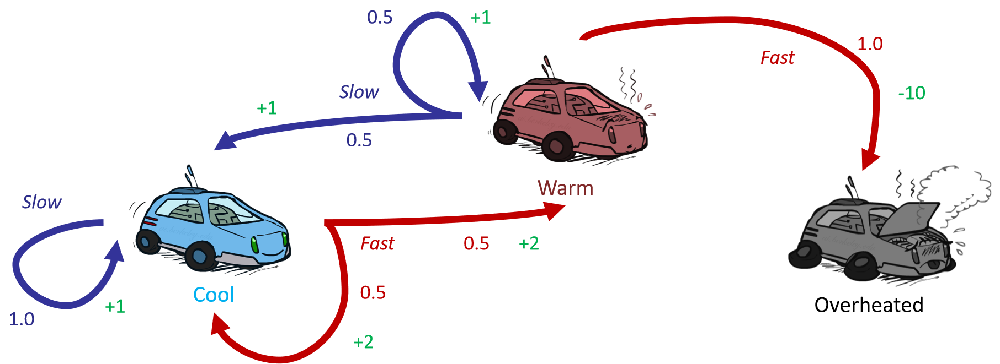
定义：
任何马尔可夫决策过程都定义了一棵搜索树。因此，如果你处于某个特定状态，例如汽车处于Cool状态，你有两个动作可选：Slow或Fast。
每个马尔可夫决策过程状态都对应着一个类似期望最大化搜索树。
但在期望最大化算法中的工作量过大，其问题如下：
为解决这个问题，我们先来了解效用。
最大期望效用原则：一个理性的智能体应该根据其知识选择最大化其期望效用的行动。
引入效用的作用：
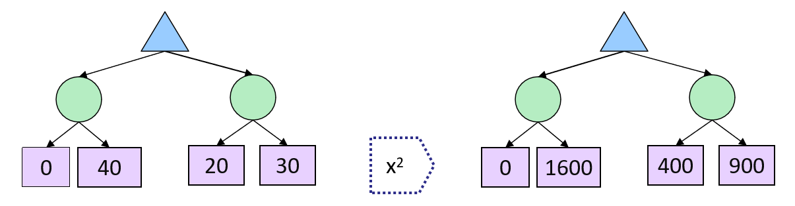
效用函数是从结果（真实状态）到实数的函数，用来描述一个智能体的偏好。
定理：任何“理性(rational)”的偏好(preference)都可以被总结为一个效用函数。
我们硬编码效用函数，让行为自发产生。
在马尔可夫决策过程（MDP）中，奖励是逐步到来的，我们需要弄清楚我们的效用函数实际上是什么。在最简单的情况下，你只需要将奖励相加，但情况可能比这更微妙。
智能体对奖励序列应该有什么偏好？更多还是更少？现在还是以后？
我们使用折扣因子(discount)来表达对奖励序列的偏好。
在现实生活中，奖励总和最大化是合理的。而且更偏好即刻奖励而非延后奖励也是合理的。基于以上的考量，折扣法的解决方案是：奖励价值按指数衰减 。
折扣法具体指什么？
为什么使用折扣法？
如果智能体现在更喜欢A而不是B，那么它将来也应该更喜欢A而不是B，反之亦然。
折扣因子:
序列:
如果游戏永远持续下去会怎么样？我们会得到无限的奖励吗？
SOLUTIONS:
在“示例：赛车MDP”中，我们提出了两个问题，现在可以给出解决这些问题的思路:
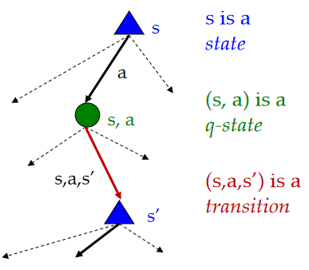
因此，价值的递归定义是（贝尔曼方程）：
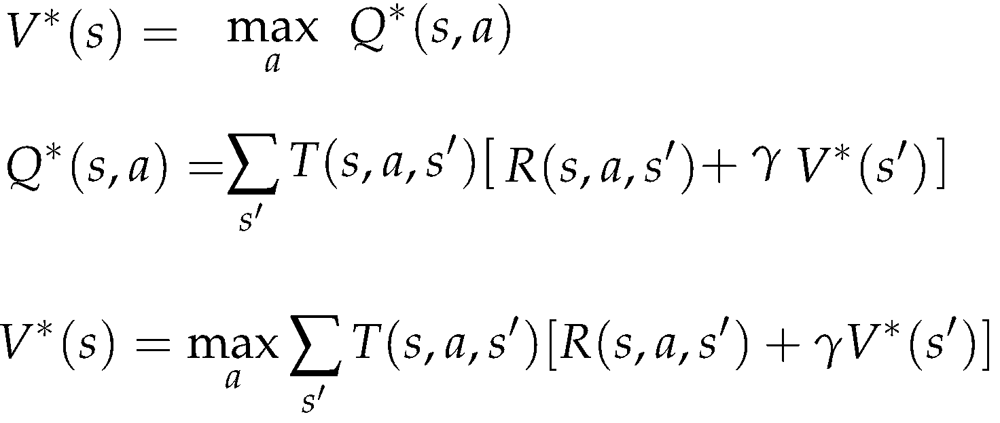
如果我们可以确定每个状态s ∈ S的价值V(s)，以使贝尔曼方程能够准确计算每个状态的值，我们可以得出结论，这些值对于它们各自的状态是最优的。
现在我们有了一个能够验证MDP中各个状态的值的最优性的框架，我们自然想要知道如何准确计算这些最优值。因此，我们需要一种“时间限制价值”(time-limited values)。
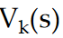
是指如果游戏在接下来的 k 步结束，状态 s 的最优值。价值迭代是一种动态规划算法，通过迭代的方式计算时间限制值，直到收敛为止。
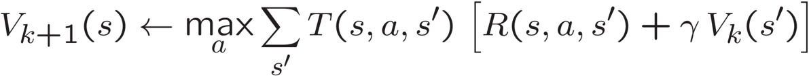
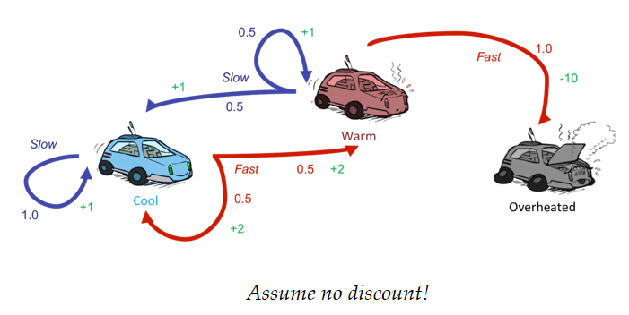
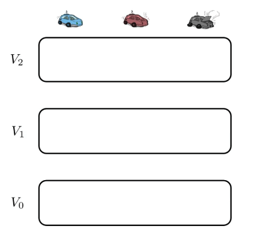
策略提取允许我们确定在给定每个状态的预期值 V(s) 的情况下应该采取哪种行动。
如果我们处于状态 s，我们应该采取能产生最大预期收益的行动 a。换句话说，我们需要运行一步 expectimax，并找到与给定值对应的行动。
给定每个状态的最优值 V*(s)，我们可以通过以下步骤提取最优策略：
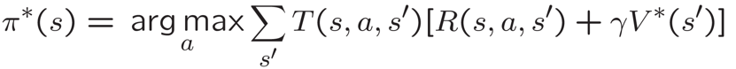
这只是一个深度为1的expectimax，因为状态 s' 的值 V*(s') 已经全部知道了，所以不需要进一步递归。
给定每个状态动作对的 Q*(s,a) 值，我们可以通过以下步骤提取最优策略：
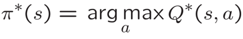
重要教训：从Q值中选择动作比从值中选择更容易！
价值迭代重复执行bellman更新。您会进行多次迭代，其中 K 从 0 开始逐渐增大。 在每次迭代中，您会访问每个状态，对于每个状态，您会考虑每个动作;
对于每个动作，您会考虑每个结果。这并不总是最佳解决方案。
最优值的替代方法(策略迭代):
Step 1: 策略评估(Policy Evaluation)：计算某个固定策略下的效用（非最优效用），直到收敛。
Step 2: 策略改进(Policy Improvement)：使用一步展望更新策略，将收敛（但非最优）的效用作为未来值。
重复以上步骤直到策略收敛。
策略评估是对一个策略的预期奖励的评估。
策略评估
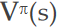
可以用以下方程来描述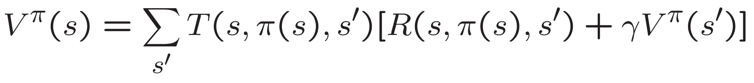
其中 = 0 表示终止状态。
请注意，这与贝尔曼方程非常相似，不同之处在于 不是最佳动作的值，而是策略 π 在状态 s 下会选择的动作的值。
如果我们有一个策略并希望改进它，我们可以使用策略改进来更新策略（即更改对状态推荐的操作），方法是根据从策略评估中得到的 V(s) 更新它推荐的操作。
我们进一步思考：
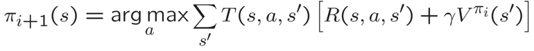
当
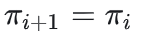
，算法成功收敛。我们可以得到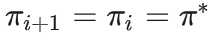
。